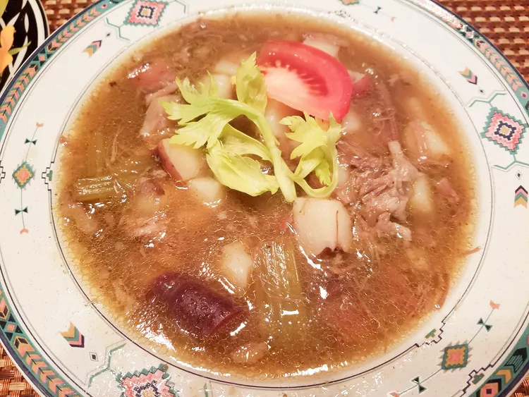

Go back to homepage
Indonesian Oxtail Soup

A deeply comforting oxtail and vegetable soup. Rich in collagen and filled with complex flavors.
Ingredients
- 4 shallots, peeled and halved
- 1 large onion, quartered, divided
- 1 (2 inch) piece ginger, peeled and thinly sliced across the grain
- 5 cloves garlic, peeled
- 3 tablespoons canola oil
- 6 whole cloves (Optional)
- 1/2 teaspoons gound nutmeg
- 1/4 teaspoons ground cinnamon
- 4 pound meaty oxtail pieces, at room temperature
- 3 stalks celery, cut into 1-inch pieces
- 2 large carrots, cut into 2-inch pieces, divided
- 4 cups water, or as needed to cover
- 3 waxy potatoes, scrubbed and cut into 1
- 3 large carrots, cut into 2-inch pieces
- 2 teaspoons salt
- 1/2 teaspoon ground black pepper
- 2 tablespoons white sugar
- 2 tablespoons fish sauce
- 3 ripe roma tomatoes, sliced horizontally into 1/2-inch wedges
- 1 (2.8 ounce) can French-fried onions
How to Make Indonesian Oxtail Soup
- Combine shallots, 2 onion quarters, ginger, and garlic in a food processor; pulse into a paste.
-
Heat oil in a large pot over medium-high heat; cook and stir cloves, nutmeg, and cinnamon until fragrant, about 30 seconds. Add shallot paste and fry until fragrant and slightly browned, 2 to 3 minutes. Add oxtails; cook and stir
until borwned, about 5 minutes.
- Stir remaining onion quarters, celery, and 2 carrots into the pot. Pour in enough water to cover by 2 inches. Bring to a boil; reduce heat, cover, and simmer until oxtail is tender, about 5 hours.
- Stir potatoes, 3 carrots, salt, black pepper into the pot. Increase heat and simmer soup until potatoes and carrots are tender, about 15 minutes. Add sugar and fish sauce; stir well to combine.
- Ladle soup into large serving bowls; top with tomato wedges and French-fried onions.